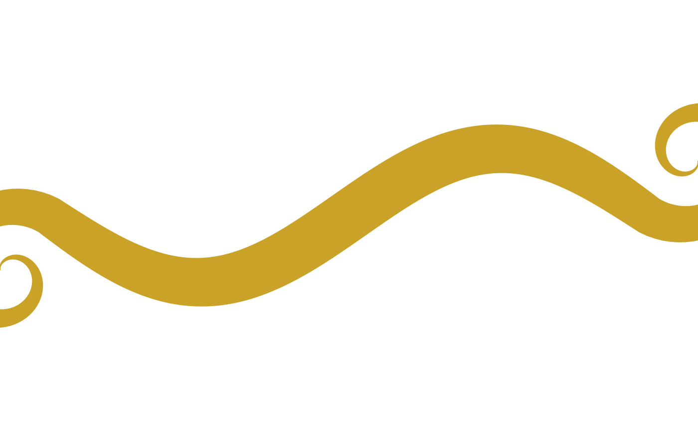

swash_grob.RdA long S-shaped flourish whose stroke swells in the middle and thins to hairlines, finishing in an inward-turning curl at each end – the kind of flourish a copperplate pen leaves under a title. The stroke is a single ribbon along the curve.
swash_grob(
thickness = 0.12,
seed = NULL,
variation = 0.5,
ink = "#C9A227",
name = NULL,
gp = grid::gpar(),
vp = NULL
)A gTree grob.
Fits itself to the box it is drawn in (a wide, short box works best, about 6 times wider than tall).
With a seed, the sway of the S, the curl size and the number of curl turns
vary.
grid::grid.newpage()
grid::grid.draw(swash_grob(seed = 2))
